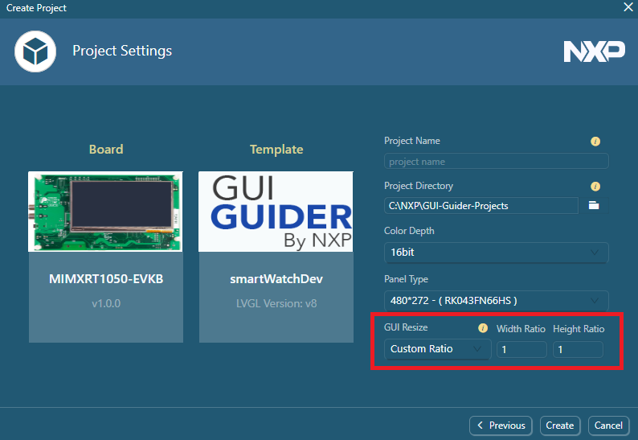

The function can support a new project based on a local project. The auto-scaling function is useful when you want to reuse an application design based on a particular display size. It is recommended that you create a project based on an existing local project as a template.
